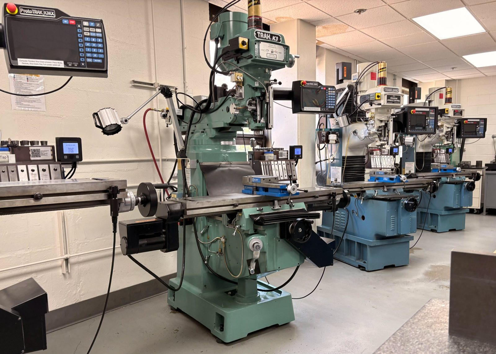
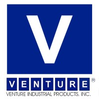

Experience
-
Machine Shop Teaching Assistant
Washington University in St. Louis · St. Louis, MO
- Teach students to run the TRAK knee mill, vertical and horizontal bandsaws, and Clausing lathe, with a 100% pass rate
- Guide students through 6 machining projects, including ProtoTRAK CNC programming, with 0 injuries
Jan 2026 – Present

-
Manual Machine Operator
Venture Industrial Products · Lee's Summit, MO
- Processed and inspected 300+ custom metal parts a day on knee mills, flat finishers, and turret punch presses, raising production by about 15%
- Read engineering drawings and checked parts with calipers, gauges, and optical comparators to hold ±0.005 in tolerances
May 2026 – Aug 2026

-
Digital Literacy Mentor (Volunteer)
Welcome Wellness, Tech Tutor · Belton, MO
- Tutored 4 senior citizens one-on-one and in groups on smartphones and computers, so they could use online banking and healthcare services on their own
Mar 2025 – May 2025